Baraka
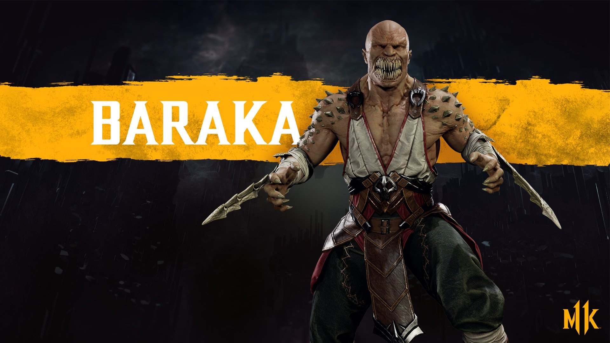
СОХРАНЕНИЕ
За то, что воинственные кочевники из племени таркатан питаются плотью своих врагов, в империи Внешнего мира они считаются существами второго сорта. Их предводитель Барака смиренно служит Шао Кану, чтобы его народ и впредь мог жить в суровых пустошах, пожирая все, что попадается на пути.

Cassie Kage
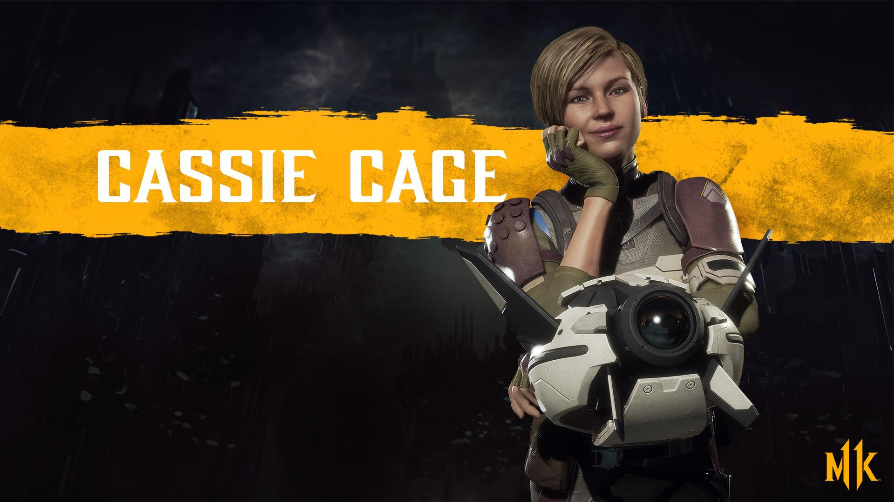
ОДОБРЕНИЕ
Дочь Джонни Кейджа и Сони Блейд несколько лет назад разобралась с Шинноком, но так и не сумела выйти из тени своих легендарных родителей. Всякий раз, вставая на защиту Земного царства, Кэсси стремится доказать, что достойна их наследия.

Centrion
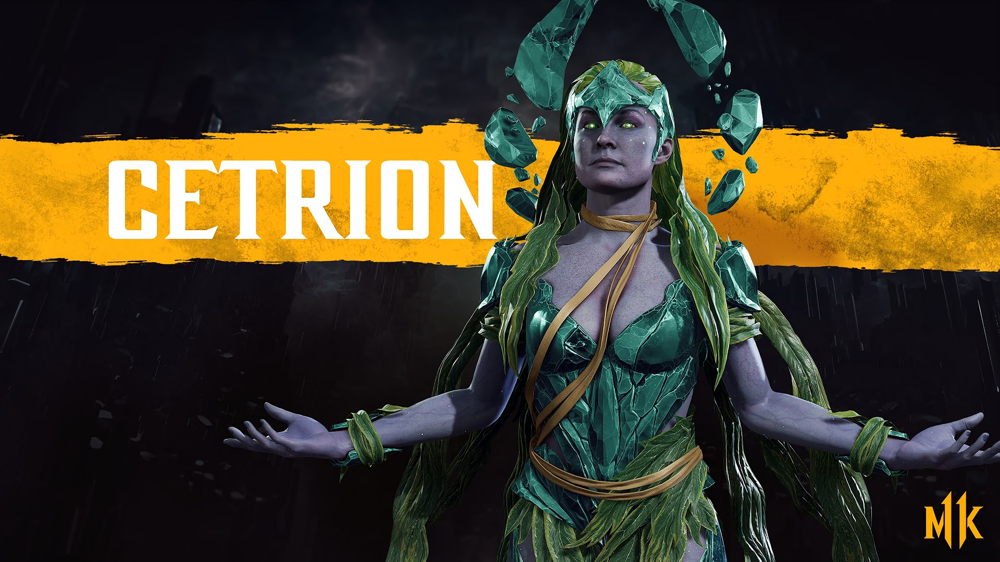
БАЛАНС
Старшая богиня добродетели и защитница жизни. Именно Цетрион в свое время изгнала Шиннока в Преисподнюю, когда тот угрожал Старшим богам. Ее благословение снисходит на воинов, сражающихся с тьмой. Однако порой героические деяния, которым покровительствует богиня, вступают в конфликт с ее стремлением к всеобщему балансу.

D'vorah
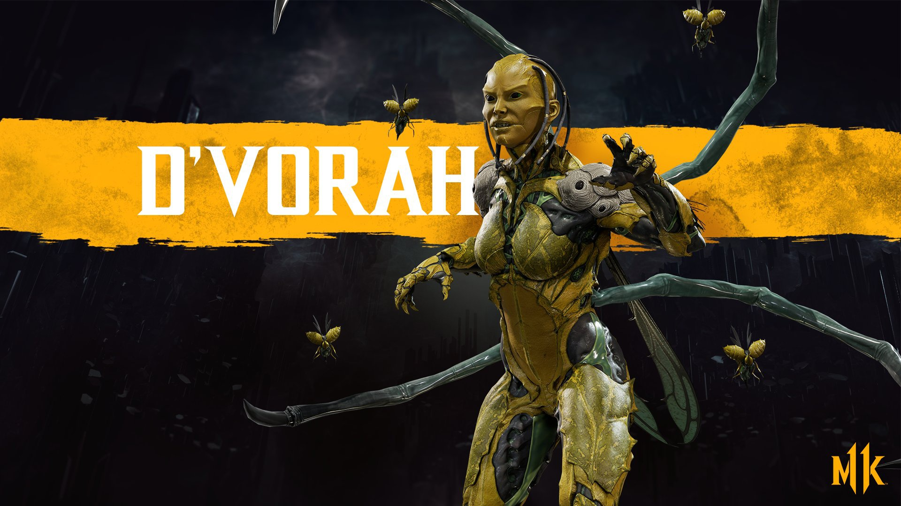
ВЫЖИВАНИЕ
Ди’Вора – особь из расы китиннов, разумных насекомых с распределенным сознанием. Она служила Шао Кану, Коталь Кану и Шинноку, но верна оставалась лишь своему рою. Ди’Вора не чурается лжи, предательства и ударов в спину – все ради того, чтобы рой выжил, когда остальные погибнут.

Erron Black
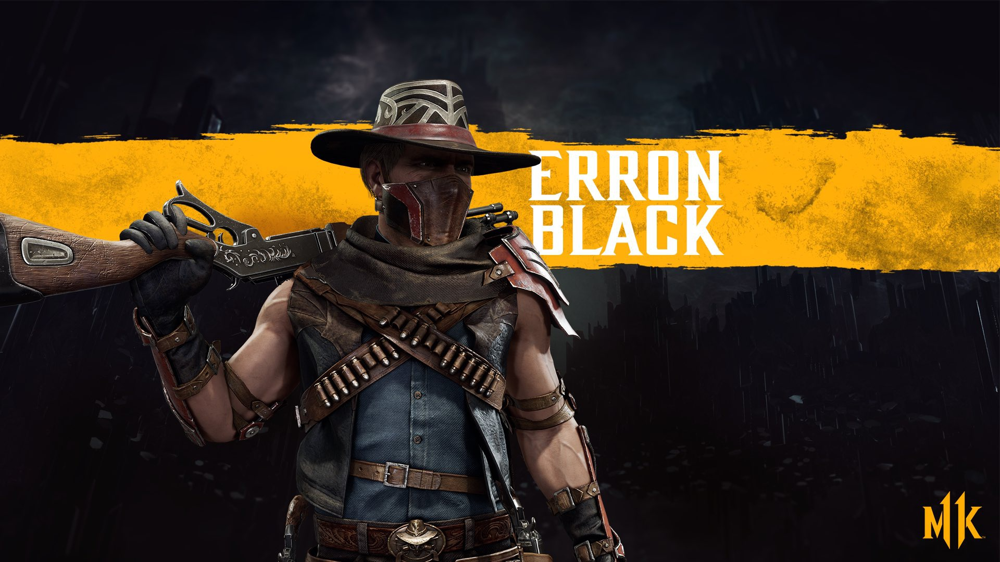
АДРЕНАЛИН
Лучший стрелок Техаса покинул свой дом и отправился на поиски приключений вместе с Кано и Черным драконом. Внешний мир стал идеальной площадкой для жестоких игр Эррона Блэка, и самый смертоносный чужак признал его своим новом домом.

Frost
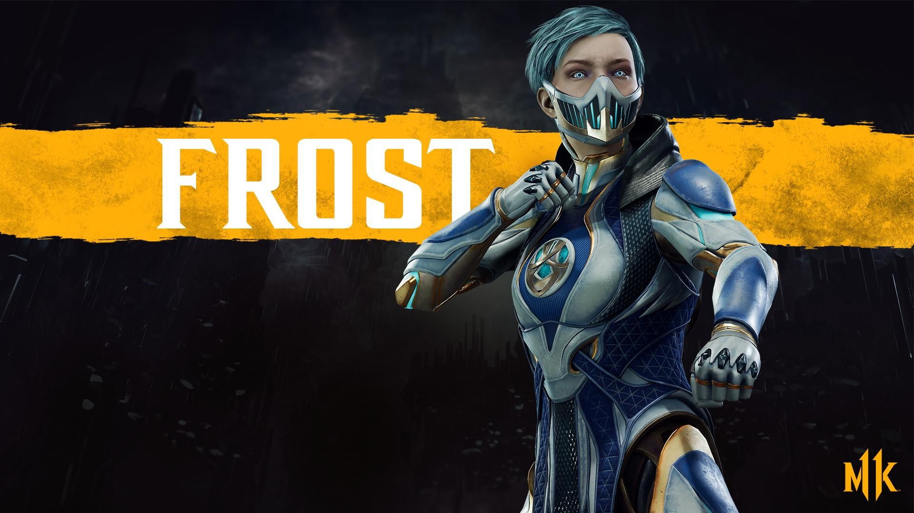
ВЫСОКОМЕРИЕ
Самая опасная ученица великого мастера Саб-Зиро. В исторический момент примирения с кровным врагом клана, Скорпионом, Фрост бросила вызов своему учителю, провозгласив, что он не достоин титула. Саб-Зиро одержал победу в битве и изгнал Фрост из клана. Годами она искала возможность расправиться с наставником. И наконец, нашла.

Geras
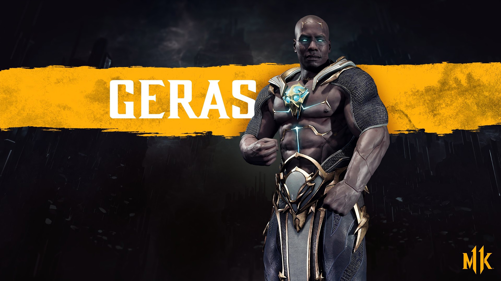
СЛУЖЕНИЕ
Бессмертный парадокс. Герас создан Кроникой, чтобы нести службу, с которой не справится никто больше. С каждой новой гибелью он становится все сильнее и умнее. Герас был свидетелем множества временных линий, которые возникали и исчезали без следа. Однако он бессилен изменить собственную участь – он существует лишь в услужение Кронике.

Jacqui Briggs
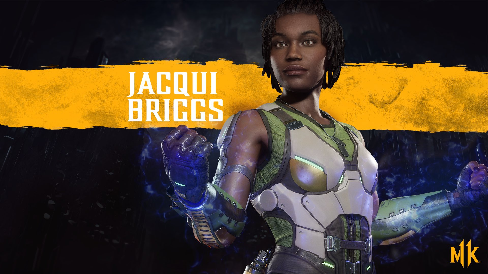
ЗАЩИТА
Дочь Джакса Бриггса. Джеки поступила на службу в Спецназ против воли отца. Жертвы, на которые пришлось пойти самому Джаксу, не испугали девушку, а лишь укрепили в стремлении защитить свою семью и свой родной мир. Она не отступает и смело сражается с теми, кто сильнее ее, гордо отстаивая честь семьи Бриггс.

Jade
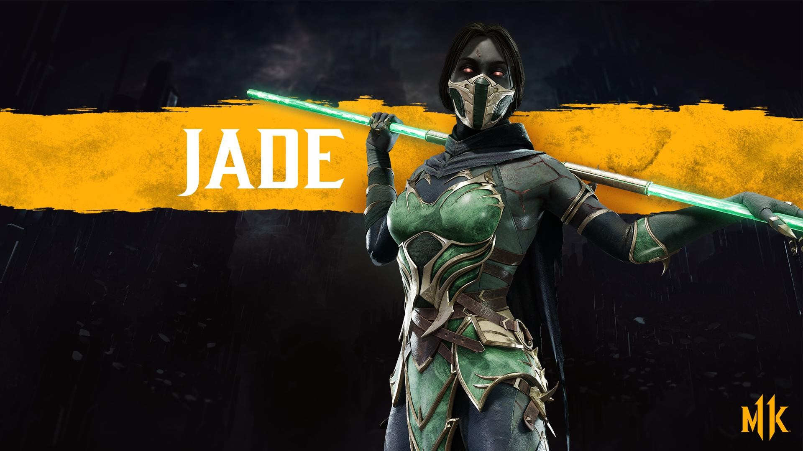
ВЕРНОСТЬ
Бесшумная убийца и имперский телохранитель. Джейд еще ребенком была отдана Шао Кану в услужение собственной семьей. Император Внешнего мира стал для нее единственным «отцом» и наставником, и все же Джейд отказалась выполнить его приказ – убить близкую подругу Китану. Гнев Шао Кана был страшен. Отныне Джейд стремится положить конец его правлению.

Jax Briggs
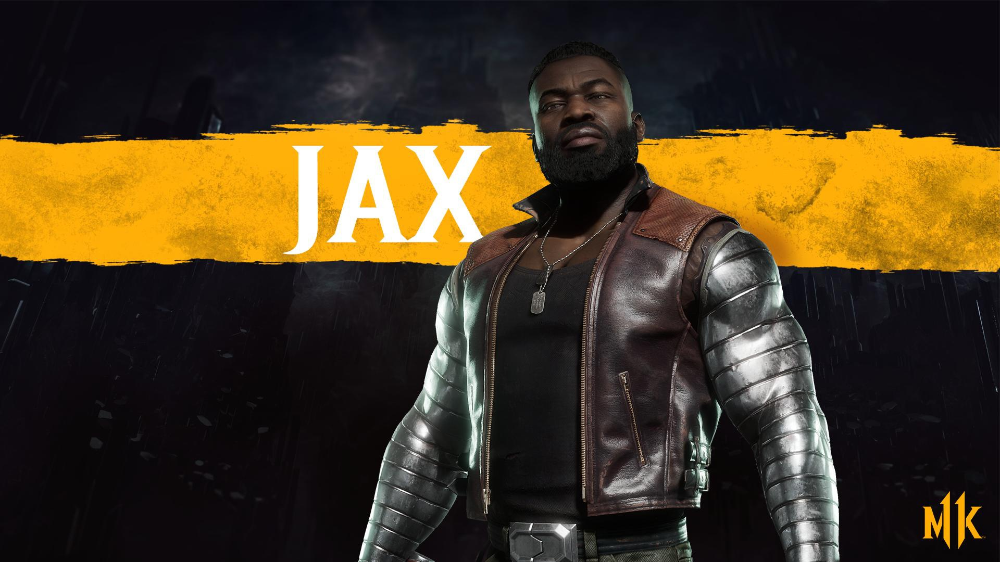
ДОЛГ
Кибернетически улучшенный боец Cпецназа Джакс Бриггс потерял обе руки, находясь при исполнении, но вернулся к своей службе, став вдвое сильнее. Хотя принесенная жертва камнем лежит на душе Джакса, он полон решимости защитить Земное царство.

Johnny Cage
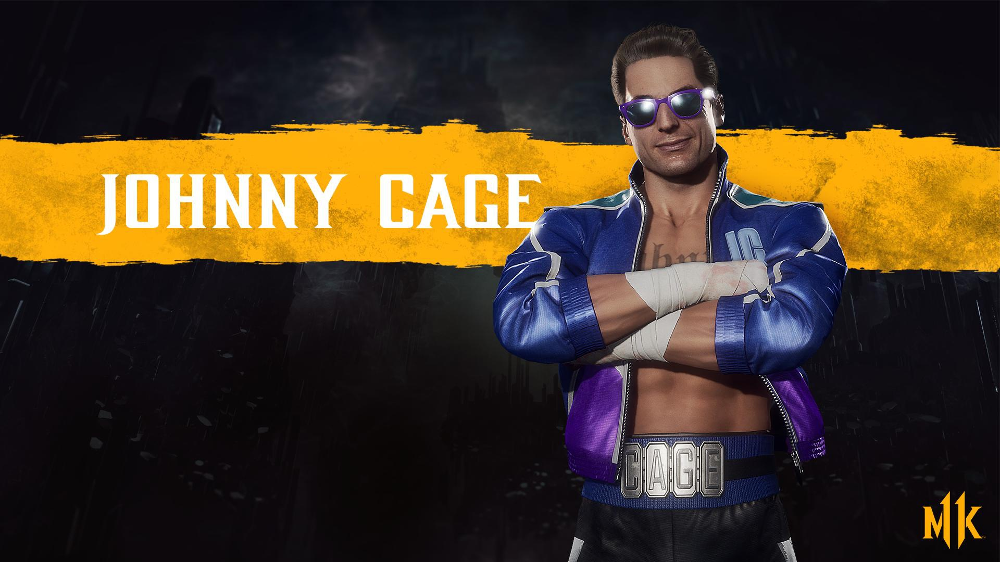
ТЩЕСЛАВИЕ
Звезда боевиков категории B. Не получивший никаких значимых наград и премий, Джонни Кейдж достиг зенита славы в возрасте 28 лет и погряз в посредственных сиквелах «Ниндзя-мима», выходящих сразу на видеокассетах. Сегодня Джонни занимается спасением Земного царства и преисполнен решимости доказать всем и каждому, что в жизни он еще круче, чем на киноэкране.

Kabal
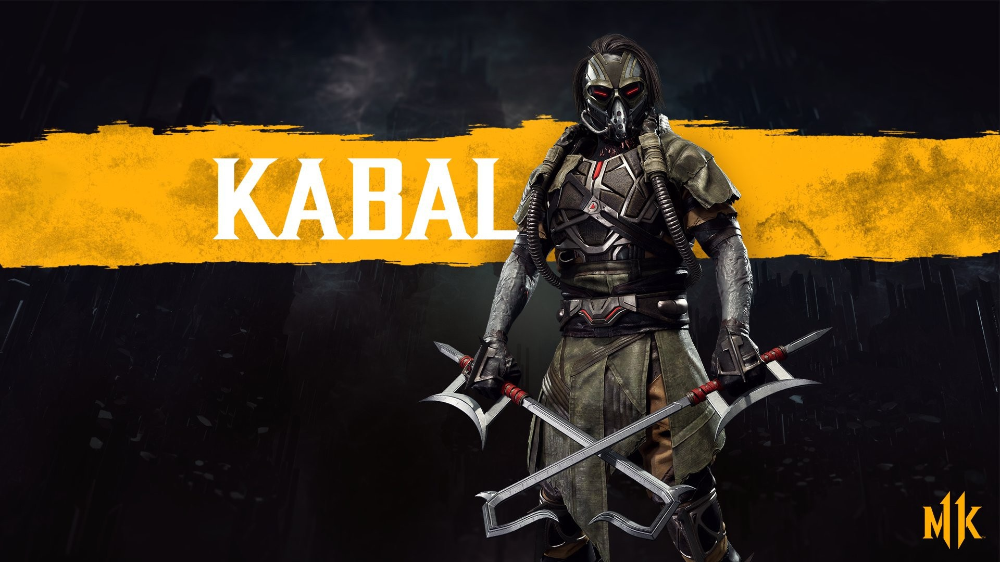
АЛЧНОСТЬ
Скорость самого быстрого боевика Черного дракона уступает лишь его жадности. Когда-то еще зеленым новобранцем он повстречал Кано и продал свой участок и коллег за круглую сумму и место в синдикате. С тех пор Кабал отправлялся по душу любого, на кого указывал Кано.

Kano
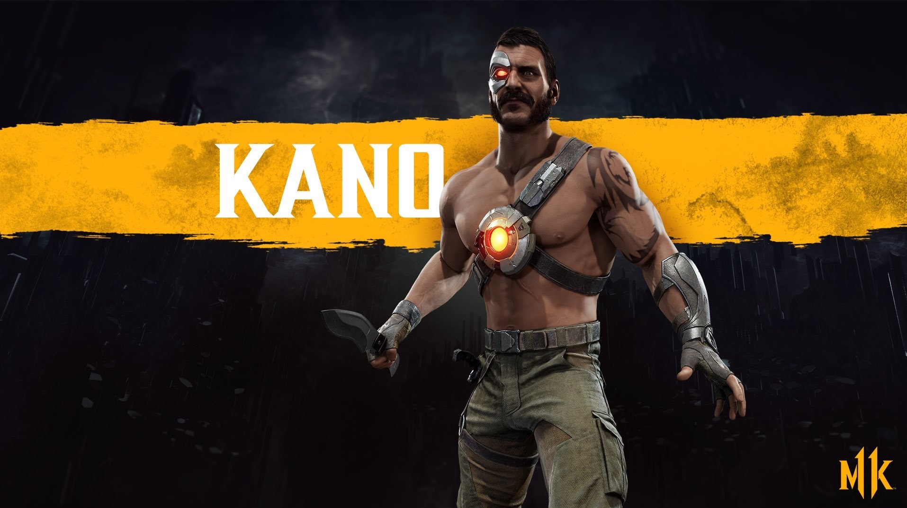
ЖАДНОСТЬ
Торговец оружием и предводитель Черного дракона, Кано заработал репутацию человека, без которого не обходится ни одна крупная сделка на черном рынке множества миров. Но ему всегда мало. Даже самые приближенные соратники знают, что Кано без колебаний всадит нож в спину собственной матери, если его устроит цена.

Kitana
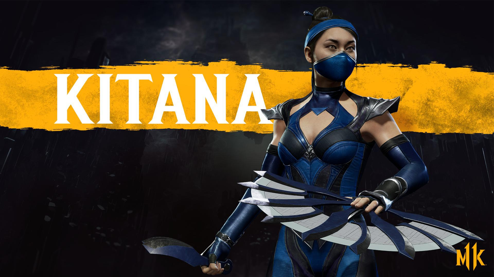
САМООПРЕДЕЛЕНИЕ
Опытный убийца в возрасте 10 000 лет и принцесса Внешнего мира. Некогда Шао Кан взял в жены мать Китаны и воспитал наследницу, скрыв правду об убийстве ее настоящего отца ради покорения Эдении. Теперь, когда истина открылась, Китана стремится отомстить.

Kollector
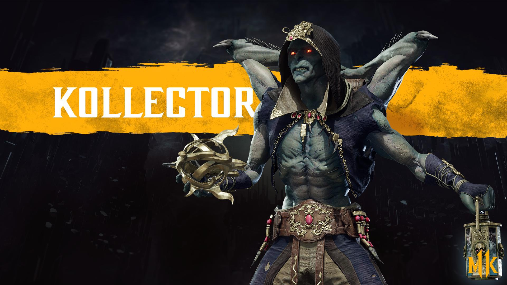
ПОЛОЖЕНИЕ
Cборщик податей империи Внешнего мира. Рожденный в бедности, Коллектор выполнял свою работу с таким с рвением, что обратил на себя внимание самого Шао Кана. В его руки стекалось богатство обитателей Внешнего мира, обеспечивая роскошь и статус. Коллектор убьет любого, чтобы сохранить свое положение.

Kotal Khan
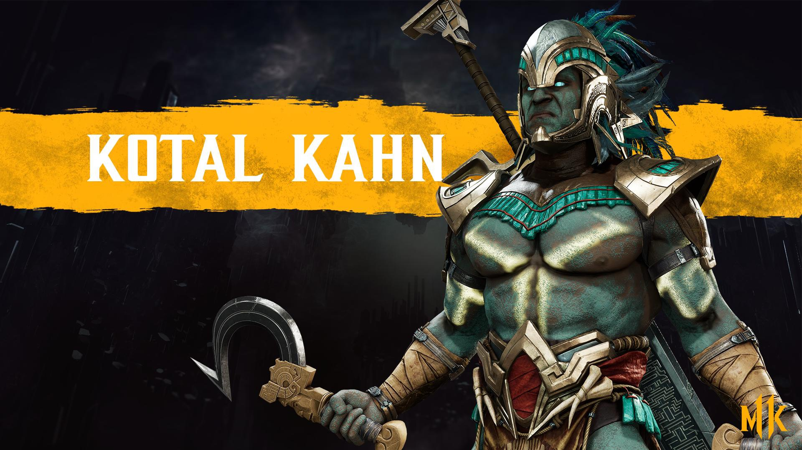
ПОРЯДОК
Воин Ош-Текк и император Внешнего мира. Коталь Кан некогда спас империю от хаоса и занял трон Кана. Но его правление омрачается растущим напряжением как в подвластных землях, так и за их пределами. Порядок должен быть восстановлен, и Коталь Кан постоянно борется с искушением использовать те же методы, что и его предшественники.

Kung lao
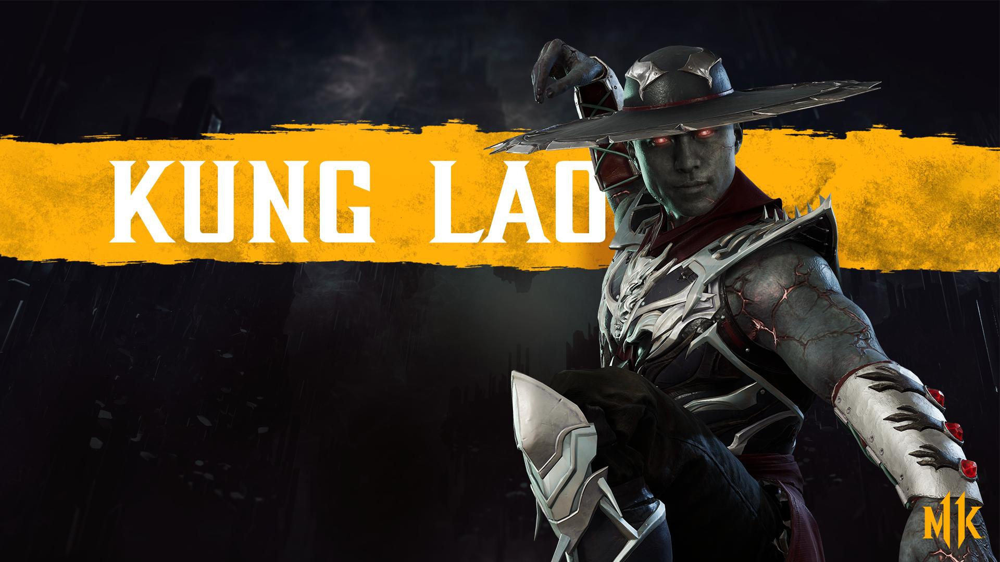
УВАЖЕНИЕ
Наследник Великого Кун Лао и монах Шаолиня. Младший Кун Лао заслужил величие, положив конец смертоносному альянсу Шан Цзуна и Куан Чи в турнире «Смертельная битва». Горячий и порывистый, однако храбрый и бесстрашный Кун Лао сражается, чтобы доказать, что достоин своих славных предков.

Lui Kang
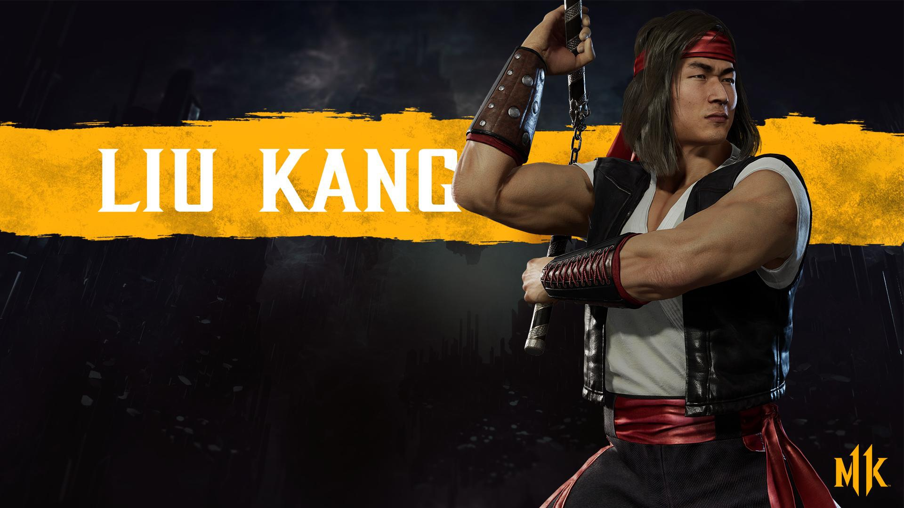
ОТВЕТСТВЕННОСТЬ
Монах Шаолиня и чемпион Земного царства. Сирота Лю Кан вырос среди монахов Шаолиня, которые обучили его своему боевому искусству. Именно он был избран и одолел Шан Цзуна в турнире «Смертельная битва», защитив родной мир. И все же эта ответственность тяжелым грузом лежит на его плечах.

Noob Saibot
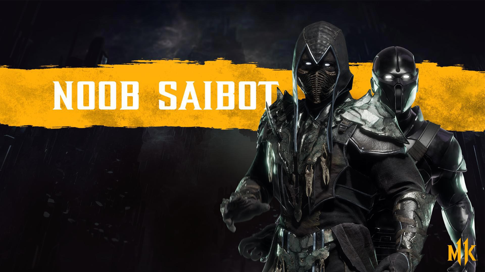
ПРИЗНАНИЕ
Тень Преисподней. В прошлой жизни он был известен под именем Саб-Зиро, чью жизнь насправедливо отнял Скорпион. Воскрешенный силой Куан Чи он обрел власть над тьмой, но сам стал рабом колдуна. Ныне Куан Чи мертв, и Нуб Сайбот может восстановить свою честь.

Raiden
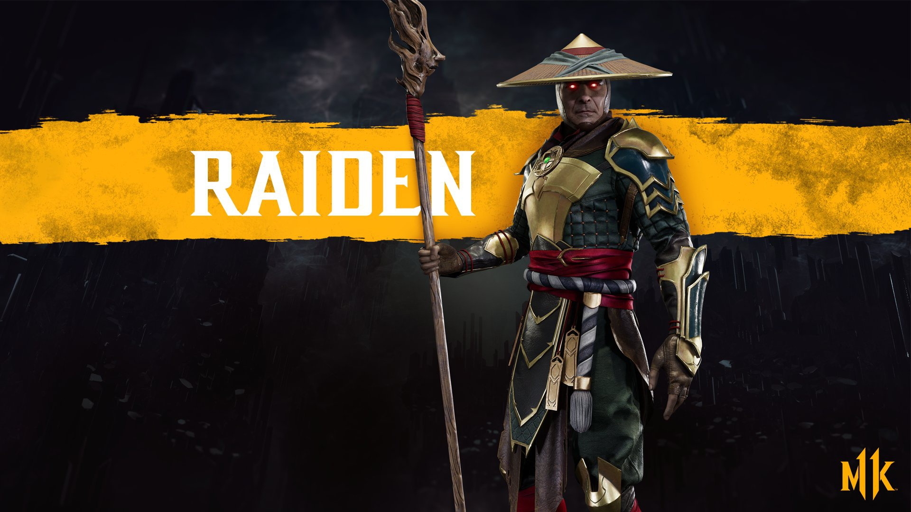
БЕЗОПАСНОСТЬ
Бессмертный бог грома и защитник Земного царства. Раз за разом Рейден спасал Земное царство, поднимая на защиту родного мира самых отважных и умелых воинов своего времени. Спустя века жестоких битв и кровопролития он опасается, что все это не прошло бесследно для человечества и его самого.

Scorpion
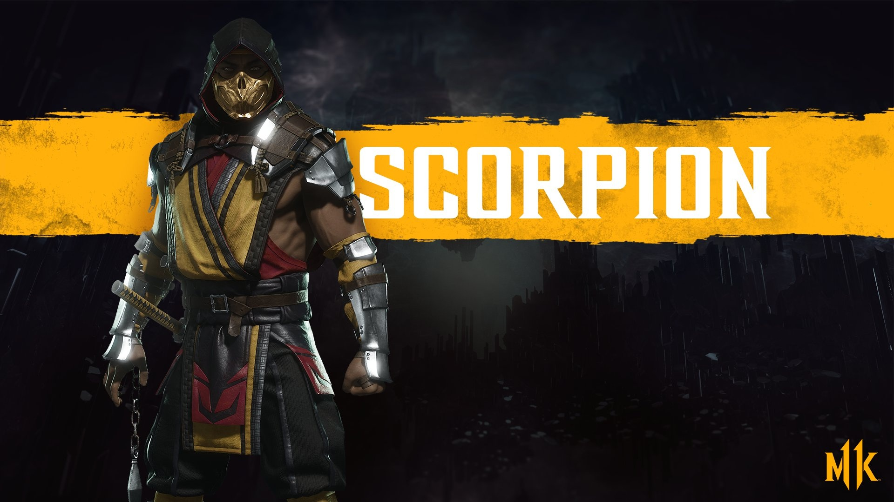
МЕСТЬ
Движимый местью Ханзо Хасаши, великий мастер Сирай Рю, прошел сквозь ад и вернулся, чтобы отомстить за погубленную семью и клан. Не ведая отдыха, он преследовал убийцу, колдуна Куан Чи, пока не уничтожил его. Ныне Ханзо возглавляет возрожденный клан Сирай Рю и стремится отомстить за тех, кто не может сделать это сам.

Shao Kahn
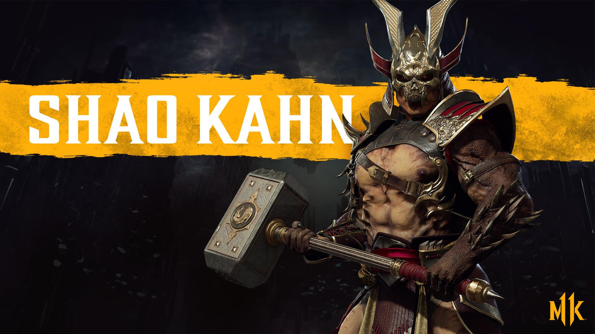
ГОСПОДСТВО
Император Внешнего мира. Тысячелетия Шао Кан властвовал во множестве миров, стремительно завоевывая новые земли. Но покорить Земное царство ему помешали правила турнира «Смертельная битва». Шао Кан проиграл битву, но не войну и по-прежнему стремится к полной и безоговорочной победе.

Skarlet
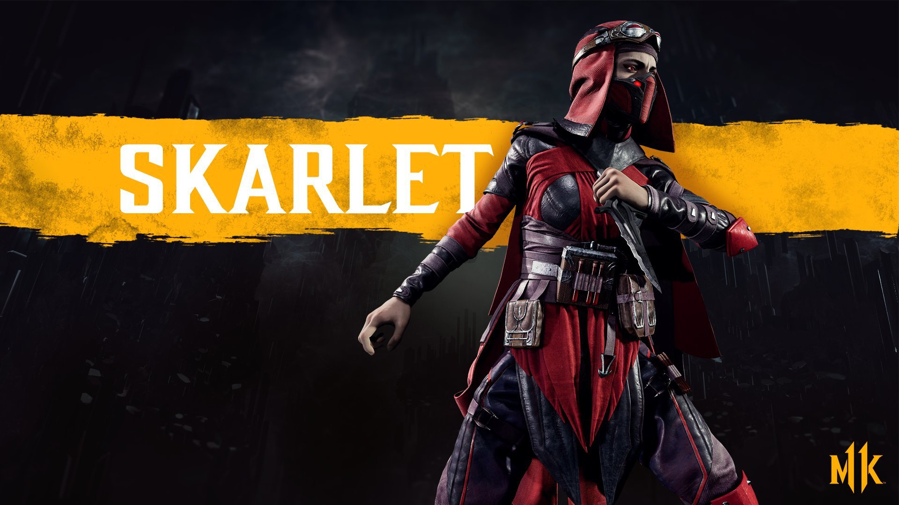
ОДОБРЕНИЕ
Личный телохранитель императора. Скарлет влачила жалкое существование, пока Шао Кан не приобщил ее к магии крови. Возродившись благодаря его колдовству, она обрела не только вечную жажду крови, но и силу, чтобы ее утолять. Среди всех творений Шао Кана именно Скарлет – самое преданное и смертоносное, она готова на все, чтобы заслужить одобрение императора.

Sonya Blade
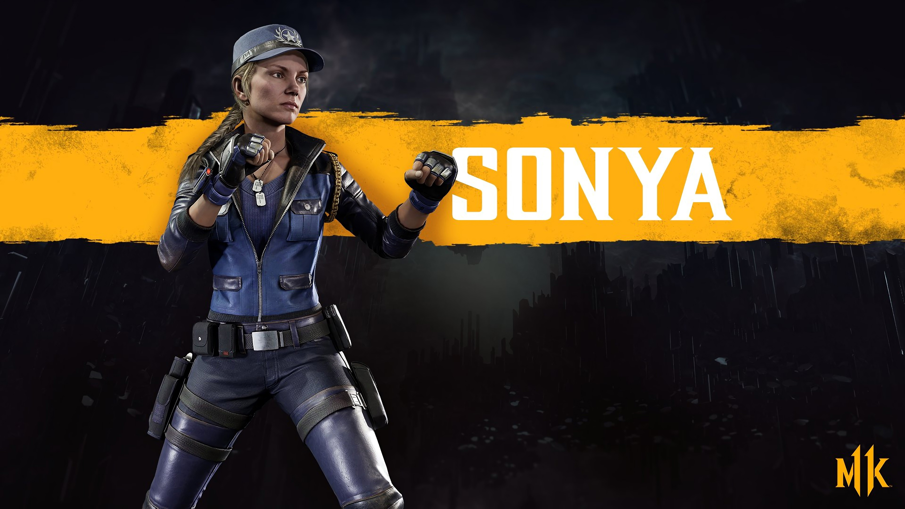
БДИТЕЛЬНОСТЬ
Кадровый офицер Спецназа. Соня Блейд достойно выступила на турнире «Смертельная битва», защищая Земное царство, и сумела спасти своего напарника Джакса Бриггса. Она не признает за собой права на ошибку и всю себя посвятила высшей цели. Соня всегда при исполнении и стоит на страже мира, пока ему грозит опасность.

Sub-Zero
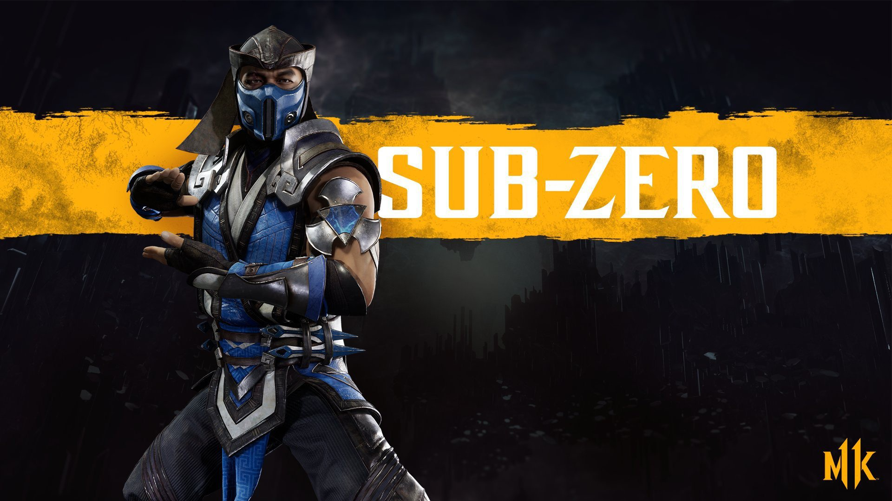
ИСКУПЛЕНИЕ
Великий мастер клана Линь Куй. Куай Лян превозмог саму смерть, чтобы искупить зло, свершенное Сектором и киборгами Линь Куй. Он восстановил клан и заключил мир с Сирай Рю. Великий мастер надеется начать с чистого листа, оставив грехи Линь Куй в прошлом.